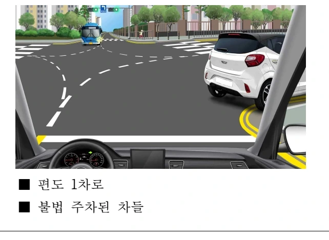

799. Дараах нөхцөлд баруун эргэх гэж байгаа бол хамгийн аюулгүй жолоодох арга 2-ыг сонгоно уу.

- ①Баруун талын харагдах орчин хязгаарлагдмал тул зогссоны дараа баруун эргэнэ.
- ②Явган хүний гарц дээр явган зорчигч байхгүй тул шууд хурдан өнгөрнө.
- ③Эсрэг чиглэлийн тээврийн хэрэгслийн хөдөлгөөнд саад учруулахгүйгээр зогсох шугамын өмнө зогсоно.
- ④Уулзварт түрүүлж орсон байгаа тул үргэлжлүүлэн явна.
- ⑤Явган зорчигчийг явган хүний гарц руу оруулахгүйн тулд дуут дохио өгнө.
Хариулт харах
Зөв хариулт
① Баруун талын харагдах орчин хязгаарлагдмал тул зогссоны дараа баруун эргэнэ.
③ Эсрэг чиглэлийн тээврийн хэрэгслийн хөдөлгөөнд саад учруулахгүйгээр зогсох шугамын өмнө зогсоно.
Үндэслэл
Эрсдэлийг урьдчилан таамаглах. Зам дээр суурилуулсан явган хүний гарц нь гэрлэн дохиогүй явган хүний гарц юм. Энэ үед жолооч эсрэг чиглэлд зүүн эргэх гэж байгаа жолооч, баруун гар талын гарц руу гүйж буй хүүхэд харагдана. Мөн замын хөдөлгөөний дүрмийн дагуу баруун гар тийш эргэхдээ бусад автомашин, морьдын хөдөлгөөнөөр дайрч өнгөрөхгүй байх, баруун гар талын гарцыг хааж, баруун гар талдаа зогсох, зогсоох журам зөрчсөн автомашины харалган хэсэгт гарч болзошгүй явган зорчигчдыг урьдчилан харж, зогсоож, анхаарал хандуулж, улмаар баруун гар тийш эргэх хэрэгтэй.
Үндэслэлийн текст нь машин орчуулга.